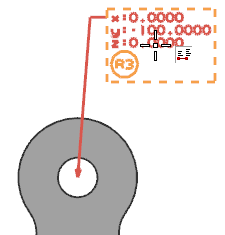
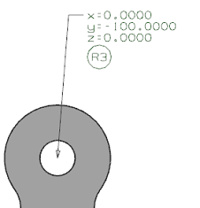

添加符号注释
-
按 Ctrl+Alt+F 键以将模型旋转到前视图。
-
在 PMI 工具条上的 PMI 注释下拉菜单中，选择符号注释
 。
。 -
在符号注释对话框的属性组中，在圆形符号文本输入框中键入 R3。
-
当原点组中指定位置 激活时，将您的光标悬浮在现有坐标注释上，直到符号注释出现在坐标注释下方，并且在两个 PMI 对象周围出现 虚线框。

-
单击以放置符号注释。

-
点击取消。